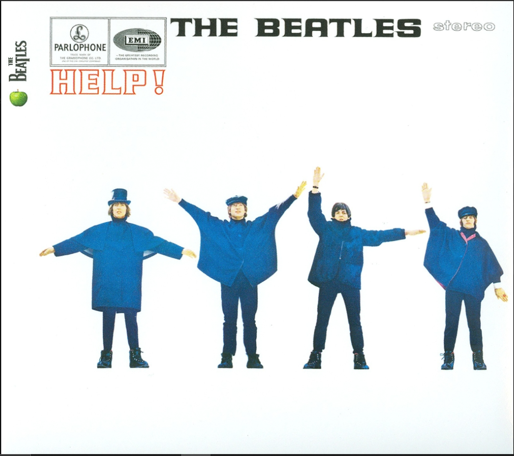
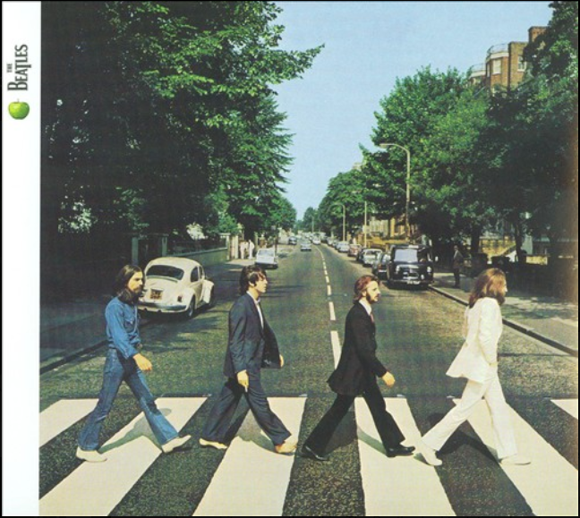
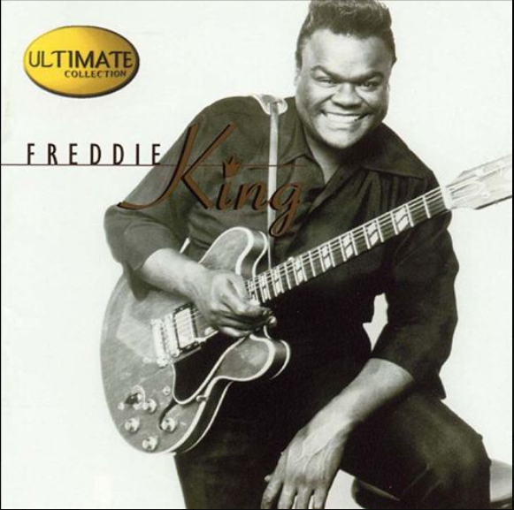
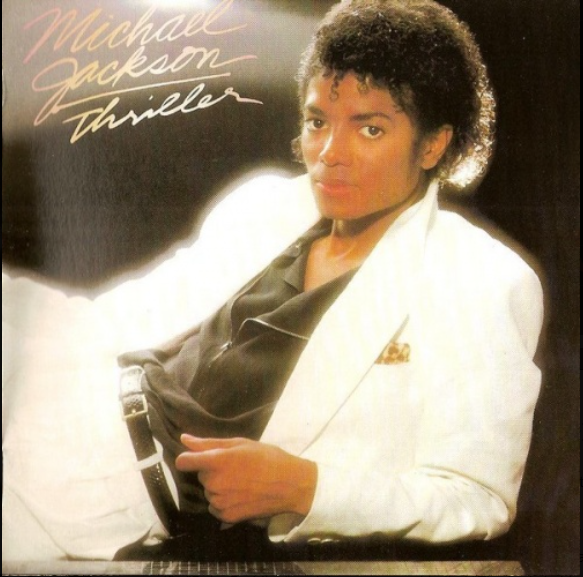
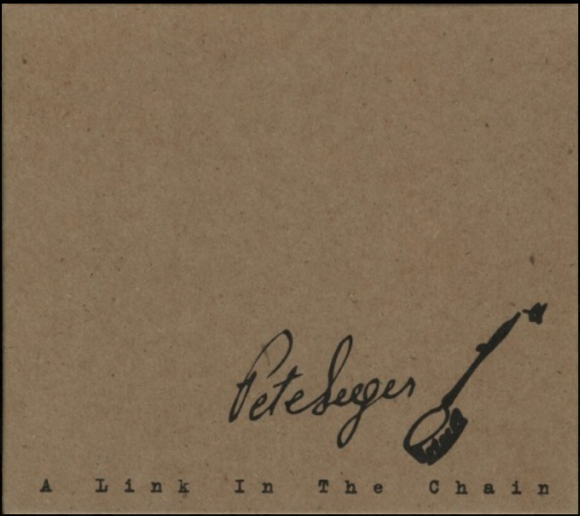
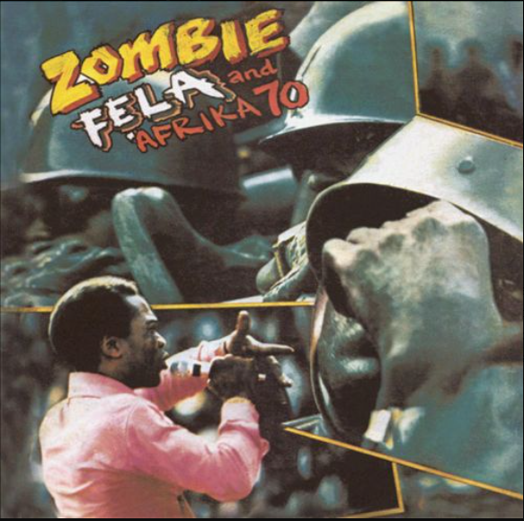
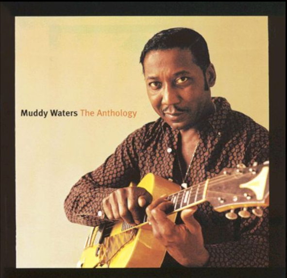
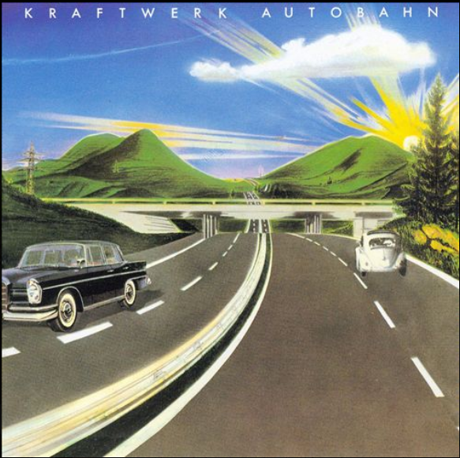

Playlist - Ten Favorite Songs
Track Name
Artist
Album Name
Release Date
Genre(s)
Cover Image

Yesterday
The Beatles
Help!
August 6, 1965
Pop
Rock

Come Together
John Lennon & Paul McCartney
Abbey Road
September 26, 1969
Pop
Rock
The Ocean
Mike Perry & Shy Martin
Berlin Tag & Nacht: Party & Feiern 2017
Release in 2016
Tropical house
Pop
My Sweetest One
Aimer
broKen NIGHT / holLow wORlD
Release in 2014
J-pop

Hide Away
Freddie King
Ultimate Collection
April 10,2001
Blues

Beat It
Michael Jackson
Thriller
September 3,1966
Pop
Rock

Get up and Go
Pete Seeger
A Link in the Chain
September 3,1966
Folk

Zombie
Fela Kuti
Zombie
Release at 1977
International

I Can't Be Satisfied
McKinley Morganfield
The Anthology: 1947-1972
August 28,2001
Blues

Autobahn
Ralf Hütter
Autobahn
Release at 1974
Electronic